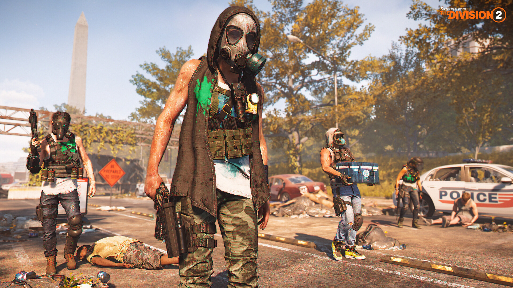

A játékban több különböző bandba lehet ütközni, akik a Hyenas, True Sons és az Outcast, majd idővel egy különleges egység, a Black Tusk is fegyevrt fog a játékos ellen. Rouge Agents, azaz Áruló Ügynökök is meg jelenhetnek, akik el árukták a Divisoint. Huters, Vadászok, iszonyatosan veszélyes ellenfelek, akik valamilyen titkos úton érhetők el. A bandák nincsenek jó viszonyban egymással, ha véletlenül össze találkoznak elkezdenek harcolni egymással.
I. Hyenas |
|---|
|  |
Típus |
| Ellenséges frakció |
| Elhelyezkedés |
|
District Union Arena (HQ) Downtown East Judiciary Square Federal Triangle |
| Vezetők |
|
Hyenas Councli Books Diesel Dime Roach Coyote Mayhem Zodiac |
| Célok |
| Túlélni és káoszt okozni Washington DC-ben |
| Egyéb nevezetes tagok |
|
Rebound Saint Chemist |
| Rouge ügynökök |
|
Lucy "Venus" Anders Sueko "Wraith" Tanagi |
Egy lazán szervezett hedonista szemetelő banda, akik a megfélemlítésre és erőszakra támaszkodnak. A civil lakosságot és a miliciákat fenyegetik. Céljuk a Zöld méreg által okozott káosz kihasználása, és a szegény és elgyengült lakássággal gyarapodjanak. Azok a civilek aki képesek voltak a túléls miatt képesek voltak lopni, portyázni, kettős kereskedelmet folytatni csoportokba szerveződtek. Ősszel 6 szervezet harcolta fel magát az Alkotmány-sugárúttól északra lévő utcákon.
Az egyik klán vezetője, Coyote fegyverszünetet kért, melyet el is fogadtak és így alakult ki a központi szabad tanács. A Szabadság paktum, melynek fő célja, az üzleti tevékenységük, kifosztások folytatása az alárendelt területeken következmények nélkül. A klán ellátmányának felhalozása. Az alárendelt területek megvédése minden frakcióval szemben.
Nem törődnek semmivel, csak saját túlélésükkel. Eszközek alapja a terror, a gyilkolás és a civilek sportból történő vadásata.
A vezetési struktúrája egy föderációs és egy autokrácia kombinációja. A központi tanácsot a 6 klánból választott Szabadok vezetik, aki abszolút tekintélyel rendelkezik a klánja fölött. Coyote rendelte el, hogy a 6 klán fogjon össze a közös ellenség, a True Sons ellen.
Elfoglalta a Jefferson Kerekedelmi Köpontot ahol egy SHD webhely található, ami Isac csomópontot tartalmazza. Espenosa ügynök behatolt, hogy vissza szerezze, de Coyote elfogta és megölte. Később egy az ügynökök csoportja vissza foglalta a területet és megölte Coyote-ot bűnei miatt.